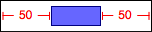
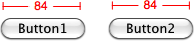
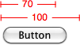
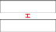

With only inequality constraints at your disposal, constraining common layout scenarios quickly becomes tedious. To horizontally align 4 buttons within a panel with a gap of 10px requires something like:
#panel[left] + 10 == #button1[left];
#button1[right] + 10 == #button2[left];
#button2[right] + 10 == #button3[left];
#button4[right] + 10 == #button4[left];
#panel[right] - 10 == #button4[right];Not to mention the obligatory size & vertical constraints needed to fully specify the panel and buttons - ugh...
This is where Grid-flavored VFL comes in. The brains at Apple came up with VFL as a more programatic way to install constraints in Cocoa AutoLayout. The idea is rather simple, the syntax should visually depict the layout. GSS takes the good parts of VFL and makes it more suitable for CSS, throws in some sugar and drops the cruft. So the above example of 4 buttons in a panel becomes:
@horizontal |-[#button1]-[#button2]-[#button3]-[#button4]-| in(#panel) gap(10);
/* which is the same as */
@horizontal |-10-[#button1]-10-[#button2]-10-[#button3]-10-[#button4]-10-| in(#panel);
/* which is the same, assuming we're using button tags, as */
@horizontal button in(#panel) gap(10);Basics
Horizontal layouts can be created with the CSS directive @h, @horizontal or @-gss-horizontal.
Vertical layouts with the CSS directive @v, @vertical or @-gss-vertical.
An element is queried within square brackets, [ Selector ], and a connection between elements is represented using a hyphen (or two hyphens separated by a number to represent the number of pixels apart the views should be). Similarly, a cushion between elements is made with a tilda.
Internally, GSS compiles VFL into CCSS (in)equality constraints, so after each VFL example the compiled CCSS is included.
WARNING: The examples below are under-constrained, they only constrain elements along one dimension of alignment, to ensure an element's size & position is fully-specified you will need to add more constraints.
Connections
Two elements can be horizontally connected without any gap:
/* VFL */
@h [#maroon][#blue];
/* Equivalent CCSS */
#maroon[right] == #blue[left];Connection Gaps
To align elements with a gap, use a hyphen and gap( Number | Constraint Variable | Element Property ):
/* VFL */
@horizontal [#button]-[#textField] gap(8);
/* or */
@horizontal [#button]-8-[#textField];
/* Equivalent CCSS */
#button[right] + 8 == #textField[left];If no gap() is defined, but a hyphen is used to make a connection then a standard gap variable is created,
/* VFL */
@horizontal [#button]-[#textField];
@vertical [#button]-[#textField];
/* Equivalent CCSS */
#button[right] + [hgap] == #textField[left];
#button[bottom] + [vgap] == #textField[top];The [hgap] & [vgap] variables can be used like normal variables, and again like all constraint variables are globally scoped.
User defined variables can be used for gaps as well:
/* VFL */
@horizontal [#box1]-[#box2] gap([col-gap]);
/* Equivalent CCSS */
#box1[right] + [col-gap] == #box2[left];/* VFL */
@horizontal [#b1]-100-[#b2]-[#b3]-[#b4] gap(#box1[width]);
/* Equivalent CCSS */
#b1[right] + 100 == #b2[left];
#b2[right] + #box1[width] == #b3[left];
#b3[right] + #box1[width] == #b4[left];Containment within an Element
For alignment contained within an element, surround a VFL alignment with |'s and use in( Selector ):

/* VFL */
@h |-50-[#purple-box]-50-| in(#container);
/* Equivalent CCSS */
#container[left] + 50 == #purple-box[left];
#container[right] - 50 == #purple-box[right];The default containing element selector is ::this. The above example can be written:
/* VFL */
#container {
@h |-50-[#box]-50-|;
}
/* Equivalent CCSS */
#container {
::[left] + 50 == #purple-box[left];
::[right] - 50 == #purple-box[right];
}Outer-Gaps
You can specify the gaps to a containing element using outer-gap( Number | Constraint Variable | Element Property ), which overrides gap() if specified:
/* VFL */
#container {
@h |-[#a]-[#b]-[#c]-|
gap(8) outer-gap(16);
}
/* Equivalent VFL */
@horizontal |-16-[#a]-8-[#b]-8-[#c]-16-| in(#container);Alignment to Points
Elements can be aligned relative to arbitrary positioned points using < Number | Constraint Variable | Element Property >
To horizontally align two buttons, each 8px from the center of the window:
/* VFL */
@h [#btn1]-<::window[center-x]>-[#btn2] gap(8);
/* Equivalent CCSS */
#btn1[right] + 8 == ::window[center-x];
::window[center-x] + 8 == #btn2[left];Alignments can be positioned within points:
/* VFL */
@h <#wall[center-x]>-[#poster]-[#clock]-<::window[right])> gap(7);
/* Equivalent CCSS */
#wall[center-x] + 7 == #poster[left];
#poster[right] + 7 == #clock[left];
::window[right] - 7 == #clock[right];Numbers, variables and arithmetic can be used:
/* VFL */
@v <100>[#box]<[row2]>;
/* Equivalent CCSS */
100 == #box[top];
#box[bottom] == [row2];Consecutive points are not constrained to each-other:
/* VFL */
@h [#btn1]-<#col3[left]>
<#col4[right]>-[#btn2]
gap(8);
/* Equivalent CCSS */
#btn1[right] + 8 == #col3[left];
#col4[right] + 8 == #btn2[left];Implicit Connections
Align group elements matching a selector:
@v .section;
@h .menu-item
in(#menu)
gap(16)
outer-gap(32);WARNING: only relatively simple selectors without spaces currently work.
Cushions
Cushions are similar to connections, only they use inequality instead of equality constraints.
/* VFL */
@horizontal [#box1]~[#box2];
/* Equivalent CCSS */
#box1[right] <= #box2[left];/* VFL */
@vertical [#box1]~100~[#box2];
/* Equivalent CCSS */
#box1[bottom] + 100 <= #box2[top];/* VFL */
@horizontal [#box1]~-~[#box2];
@vertical [#box3]~-~[#box4];
/* Equivalent CCSS */
#box1[right] + [hgap] <= #box2[left];
#box3[bottom] + [vgap] <= #box4[top];Size Predicates
Size Predicates allow elements to be sized in the dimension parallel with the alignment.
/* VFL */
@horizontal [#button(100)];
/* Equivalent CCSS */
#button[width] == 100;
/* VFL */
@horizontal [#button1(==#button2)];
/* or */
@horizontal [#button1(==#button2[width])];
/* Equivalent CCSS */
#button1[width] == #button2[width];Multiple size predicates:

/* VFL */
@horizontal [#flexibleButton(>= 70, <= 100))];
/* Equivalent CCSS */
#flexibleButton[width] >= 70;
#flexibleButton[width] <= 100;/* VFL */
@horizontal |-24-[#find]-[#findNext]-[#findField(>=30)]-24-| in(#popup);
/* Equivalent CCSS */
#popup[left] + 24 == #find[left];
#find[right] + [hgap] == #findNext[left];
#findField[width] >= 30;
#findNext[right] + [hgap] == #findField[left];
#findField[right] + 24 == #popup[right];VFL Chains
Chains are a powerful mechanism to take each element within an VFL alignment (excluding a containment element & points) and construct a chained constraint statement against a property of each element.
Chains take the form chain-{Property}({Head Operator} {Expression} {TailOperator}).
The Head Operator, Expression and Tail Operator are optional.
The Head Operator is assumed to be ==.
If no Expression is given than the elements properties are chained together.
If unspecified, the Tail Operator is inferred from the Head Operator.
For example,
/* VFL */
@h [#b1][#b2][#b3][#b4] chain-height chain-width(250);
/* or, more explicitly */
@h [#b1][#b2][#b3][#b4] chain-height(==) chain-width(== 250 ==);
/* Equivalent CCSS */
#b1[right] == #b2[left];
#b2[right] == #b3[left];
#b3[right] == #b4[left];
#b1[height] == #b2[height] == #b3[height];
#b1[width] == 250 == #b2[width] == 250 == #b3[width];/* VFL */
@vertical |-8-[#b1][#b2]-8-|
in(#panel)
chain-center-x(::window[centerX])
chain-width(>= 50);
/* or, more explicitly */
@vertical |-8-[#b1][#b2]-8-|
in(#panel)
chain-center-x(== ::window[centerX] ==)
chain-width(>= 50 <=);
/* Equivalent CCSS */
#panel[top] + 8 == #b1[top];
#b1[bottom] == #b2[top];
#b2[bottom] + 8 == ::window[bottom];
#b1[centerX] == #panel[center-x] == #b2[center-x];
#b1[width] >= 50 <= #b2[width];VFL Strength & Weight
As established with CCSS, Strength & Weight can be used in VFL statements using !{Strength}{Weight} at the end of a statement. Strengths can be weak, medium, strong & require. Weights are positive integers. As a rule of thumb, use Strengths first & foremost & resort to weights as a last resort.
Alignment Strength & Weight:

/* VFL */
@vertical [#topfield]-10-[#bottomfield] !strong100;
/* Equivalent CCSS */
#topfiled[bottom] + 10 == #bottomfield[top] !strong100;Size Predicates have their own Strength & Weight:
/* VFL */
@vertical [#box1(>= [row-height] !require, == 20 !strong)][#box2][#box3] !medium;
/* Equivalent CCSS */
#box1[height] == 20 !strong;
#box1[height] >= [row-height] !require;
#box1[bottom] == #box2[top] !medium;
#box2[bottom] == #box3[top] !medium;Chains have their own Strength & Weight:
/* VFL */
@vertical [#b1][#b2][#b3][#b4]
chain-width(==!weak10)
chain-height(<=150>=!required)
!medium;
/* Equivalent CCSS */
#b1[bottom] == #b2[top] !medium;
#b2[bottom] == #b3[top] !medium;
#b3[bottom] == #b4[top] !medium;
#b1[width] == #b2[width] == #b3[width] == #b4[width] !weak10;
#b1[height] <= 150 >= #b2[height] <= 150 >= #b3[height] <= 150 >= #b4[height] !required;